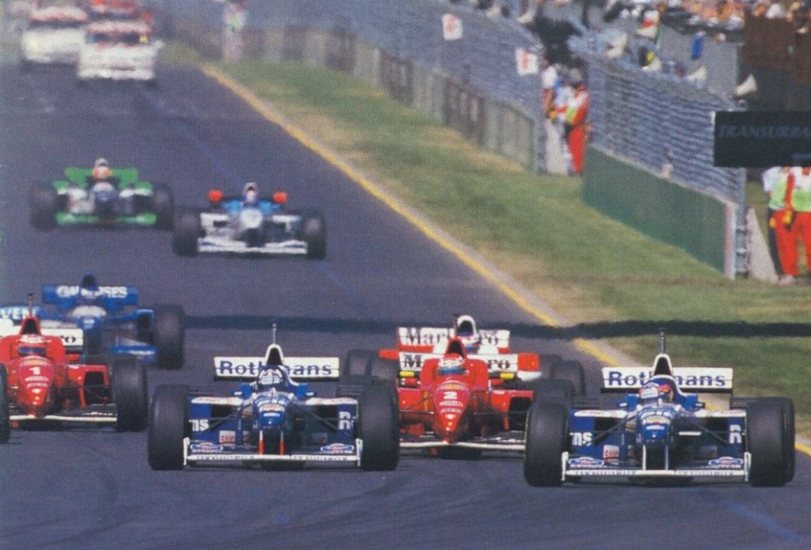
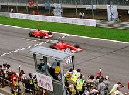

Résultats avant la retraite (1991-2006) :
 Après avoir débuté à la 11e épreuve de la saison, il participe au six dernières course et termine la saison à la 12e placce avec 4 points.
Après avoir débuté à la 11e épreuve de la saison, il participe au six dernières course et termine la saison à la 12e placce avec 4 points.- Schumacher termine sa première saison complète avec Benetton avec une victoire et 53 points. Il est à la 3e position.
- La deuxième saison est comparable à la précédente. Il récolte une victoires et 52 points.
Il termine 4e. - Champion du monde. 92 points et 8 victoires.
- Champion du monde. 102 points et 9 victoires.
- Première saison chez Ferrari. Il termine 3e avec trois victoires.
- Schumacher est disqualifié. Il obtient tout de même 5 victoires et 78 points.
- Il termine 2e. Il récolte 86 points et 6 victoires.
- À cause d'un violent accident, il a du se retirer après le Grand Prix d'Angleterre. Il termine 5e avec 44 point et deux victoires
- De retour, il remporte le championnat. 108 points et 9 victoires.
- Champion du monde. 123 points et 9 victoires.
- Champion du monde. 144 points et 11 victoires.
- Champion du monde. 93 points et 6 victoires.
- Champion du monde. 148 points et 13 victoires.
- Première saison sans être champion depuis cinq ans. Il termine 3e avec 62 points et seulement une victoire.
- Schumacher décide de prendre sa retraite à la fin de la saison. Il termine la saison avec 121 points, 7 victoires et la 2e position.
Résultats après la retraite (2010-aujourd'hui) :
- C'est le grand retour du champion. Il rejoint la nouvelle équipe Mercedes. Il a une saison décevante. Schumacher termine 9e avec 72 points.
- La seconde saison de son retour est marquée par une voiture non compétitive. Il termine 8e avec 76 points.
- Il débute la troisième saison de son grand retour dans l'espoir de retrouver la voie vers la victoire.

{kind=link}
{kind=link}
{kind=link}